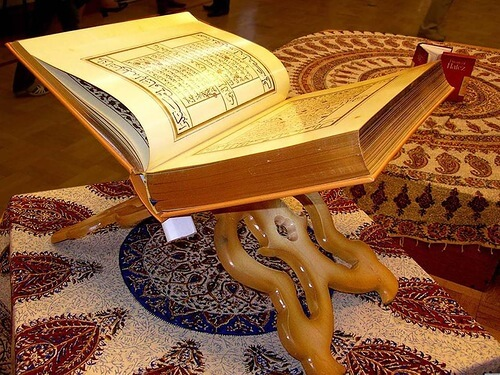

Куран - Алла Тааланын жер менен асмандагы көркөм ысымдарынын руханий
казынасын ачыктаган,
сырдуу кайып ааламынан кабарларды билдирген тил.
Куран - Ислам дининин жаркырыган
күнү, пайдубалы.
Куран Алла Тааланын, адамзаттын материалдык, моралдык бүткүл муктаждыктарын
канааттандыраарлык абалда
түшүргөн берекелүү, кемтиксиз ыйык китеби. Ал жер менен асмандын Жаратуучусунун
кайрылуусу жана Аллах
Таааланын сөзү.
Куран - адамдык наркка ылайык анын жүрөк, рух, акыл жана дене
түзүлүшүн эске алып
Аллах Таала тарабынан жиберилген мыйзамдар жыйнагы. Куран шарият өкүмдөрүн, Алла Таалага
кулчулуктун
кандайча аткарылаарын, дуба адептерин жана башка даанышман сырларга толгон маалыматтарды
өз ичине камтыйт.
Ал Аллах Таала тарабынан жиберилген бүткүл китептердин эң соңкусу жана кыяматка чейин
жоголбой бузулбай турганы.
Жан-жаныбарлардын ичинен бир гана адам сүйлөө менен бирге окуу
өзгөчөлүктөрүнө ээ.
Ошондуктан,Ислам дини өз ишин окууга, илим алууга үндөө менен баштаган. Алла Таала
тарабынан жиберилген эң алгачкы ыйык кабар:
«Жараткан Жаратуучуңдун аты менен (баштап) окугун! Ал инсанды
уюган кандан жаратты,окугун! Сенин Жаратканың (адамзатка) калемди (тактап айтканда,
жазуу-катты) үйрөткөн өтө берешен. Ал инсанга билбеген нерселерин үйрөттү!»
аяттарда пайгамбарыбызга(САВ) берилген алгачкы буйрук - окуу болгон.
Ушул алгачкы аяттардан баштап, Ислам дини инсандарды наадандык,
ырым-жырымга эмес,илим-билимге чакыруусу жана жалаң гана окуу,
үйрөнүү менен Жараткан ыраазы боло турган туура жолду табууга чакыруусу маалым болду.
Куран - илим, адеп-ахлак,тарбия жана жүрүш-туруш маселелериндеги негизги маалыматтарды,
принциптерди өз ичине камтыган эң негизги булак болгондуктан,
көп окулууга эң ылайык китеп.Мына ушул себептүү пайгамбарыбыз
(САВ) өзү Куранды аябай көп окугандай эле,көптөгөн хадистеринде үммөтүн да Куранды көп
окууга үндөгөн.
Албетте, Куран окууну үйрөнгөндөр алгачкы кадамдарында бираз кыйналышат.
Ал эле эмес, жаңылыш окуулары да мүмкүн.
Бул учурда «Мындай окуу Куранга урматсыздык болуп жүрбөсүн, андан көрө окубаганым жакшы
го?» деген ойлор туулушу мүмкүн.
Ушул сыяктуу шектенүүлөрдүн, чочулоолордун алдын алуу үчүн пайгамбарыбыз (САВ) бир
хадисинде:
«Куран окууда уста болгон адам урмат-сыйлуу улуу периштелер менен бирге
болот. Ал эми окуганды жакшы билбесе да, аракеттенип окуган адам үчүн эки эсе сооп бар».
Бул сооптордун биринчиси, Куранды окугандыгы үчүн, экинчиси болсо, Куран
окууда кыйналып, билбесе да аракеттенгендиги үчүн берилет.
Демейде адамдар бири-биринин кылгандарын туурашып, башкалардын колундагы
күнүмдүк жакшы нерселерди, сый-урматка ээ болууну эңсешет.
Кала берсе кээде мындай сый-урматка жеке өзү гана ээ болуп, башкалардын куру калуусун
каалоочулар да табылат.
Мунун өзү ичи тардык деп аталат. Ал эми кээ бирөөлөр башкалардагы
сонун-сонун жакшы сапаттардын үлгүлөрүн өзүндө болсо экен деп самашат.
Бул - суктануу болот. Ислам динибиз ичи тардыкка тыюу салып, харам кылган. Бирок
башкалардагы көркөм сапаттарга суктануу жаман иш саналбайт. Өкүнүчтүүсү
көпчүлүк адамдар суктанбоочу нерселерге суктанып, мал-мүлктү биринчи эңсешет. Тегинде
суктанууга тийиштүү эки түрдүү адам бар. Пайгамбарыбыз (САВ) бул эки
түрдүү адамды мындайча сүрөттөйт:
«Эки түрдүү адамга гана суктансаң болот:
Биринчиси: Алла Таала Куран илимин үйрөтүп, күн-түнү үзгүлтүксүз Куран
окуп турган адам. Коңшусу аны угуп: «Аттиң, баланчага берилген Куран окуу сыйы
мага да берилгенинде мен да ал өңдүү ар дайым Куран окусам гана!» дейт.
Экинчиси: Алла Тааладан берилген байлыкты, Исламга кызмат көрсөтүү
жолунда сарптаган адам».
Демек, бул дүйнөдө суктанууга, ичи тардык кылууга жогорудагы эки түрдүү
адамдан башка ылайыктуулар жок экени белгиленген. Кээ бир адамдар материалдык
жактан Ислам динибизге кызмат көрсөтө алгыдай мүмкүнчүлүккө ээ болбосу анык. Мындай
адамдар Куран илимин үйрөнүү, окуу аркылуу байлар жеткен соопко жете алат.
Жогорку хадисте коомчулуктагы бай-кедей катмарлар бүт бойдон суктана алгыдай бир
моделдик адам тиби көрсөтүп өтүлгөн. Куран окуу менен бирге анын окулганына
кулак салып, угуу да өзүнчө сооптуу иш. Куранды угуунун сообу хадисте мындай айтылган:
«Алла Тааланын китебинен бир аят укканга эселеп сооп жазылат.
Аны окуган адамга окуган аяты кыямат күнү бир нур болот».
Түн ичинде окулган Куранды угуу үчүн периштелер келерин пайгамбарыбыздын
(САВ) доорунда айрым сахабалар өз көздөрү менен көргөнү баяндалган.
Куран окулганда угуунун көптөгөн сообу бар болгондуктан, пайгамбарыбыз
(САВ) кээ бир сахабаларына Куран окутуп, аны өзү уккан.
Куран күнү-түнү деп айырмаланбастан окулганы жакшы. Хадисте мындай
айтылган:
«Куранды ачыктан ачык окуган, садаканы ачыктан-ачык берген өңдүү болот.
Куранды жашыруун окуганда, садаканы жашыруун бергендей иш».
Садака, зекетти ачык бергенде башкаларга үлгү болуу көздөлгөн сыяктуу
эле, ачык окулган Куран да башкаларга Куран окууну үндөө менен барабар.
Дегинкиси ар кимдин ыкластуу ниетине жараша сооп болоору анык.
Куран тек гана динибиздеги буйрук, тыйымдарды үйрөнчү китеп болбостон,
ошол эле учурда акыл-насаат, ойчулдук, Исламга үгүттөө,
зикр жана дуба-тилектер өңдүү толгон-токой сонун темаларды камтып турат. Бул айтылып
өтүлгөн мазмундарды тынбастан көп кайталап, иреттүү жана тартиптүү
эскерип туруу зарыл. Ошондон улам да Куранды көптөп окуп туруу милдет. Мындай дайыма
окуунун өлчөмү жөнүндө түрдүүчө көз караштар бар болсо да, ай сайын
бир ирет Куранды толук окуп чыгуу зарыл экени хадисте көрсөтүлгөн. Бул сүннөткө ылайык
деп кабыл алынган.
Куран окуу маселесине олуттуу мамиледе болуу зарыл. Адамдар Куранды эң
уккулуктуу, көркөм кырааты менен окуш керек. Алла Таала өз элчисин(САВ):
«Аллага баш ийип, Куран окуусун», «Дааналап, сөздөрүн даана чыгарып окуусун» буюрган.
Пайгамбарыбыз (САВ) Куранды уккулуктуу көркөм кырааты менен окууга
буюруп, өзү да көркөм кырааты менен окулган Куранды берилип уккан жана
Абдулла ибни Масьуд (р.а.) окуган Куранды угуп отуруп, көздөрүнө жаш толгон. Ошондой эле
ойго толгон муңдуу үн менен окууга үндөгөн жана угуучуларда
Алла Тааладан коркуу менен үмүт сезилип, ыкыласты ашырган Куран кыраатын мактоого алган.
Пайгамбарыбыз (САВ) Куран окууну жүрөгүнөн сүйгөн, андыктан Куран окулуп
бүткөн соң баш жагын кайталап, бир топ окуп, кайра башынан баштап койчу эле.
Пайгамбарыбыз (САВ): «Курандын досу, Курандын башынан соңуна, соңунан башына окуй
жөнөлөт, токтогон кезде кайра баш жагына көчөт» деген эле.
Негизинен Курандан күнүгө тартиптүү түрдө белгилүү өлчөмдө окуп туруу
абзел.
Куранды түшүнүп, ичиндегилерди чечмелөөнүн биринчи баскычы - Куран
окууну үйрөнүү. Ислам тарыхында бүткүл илимдер Куранды окууну үйрөнүү менен башталчу.
Пайгамбарыбыз (САВ) Алла Тааланын Куран окугандарды сүйгөнүн төмөндөгүчө баяндаган:
«Албетте, Алла Тааланын адамдардын арасында достору бар. «Алар кимдер эй, Алланын
элчиси?» деп сурашты эле, «Куранды окуп, үйрөнгөндөр. Алар Алла Тааланын сүйгөн адамдары
жана жакындары» деп жооп берди.
Куран окуу адамдардын Алла Тааланын алдындагы даражаларын жогорулатат.
Алла Тааланын сөзүн окуп, Аны менен «сүйлөшүү» адамдарды Алла Таалага жакындаштырган
ибадаттардын эң башында келет.
Ислам дини илим алууга үндөйт. Алла Тааланы таанып билүү жана Ага чын
көңүлдөн баш ийүү бүткүл илимдердин башында келет. Адамдардын Алла Тааланы билүүсү жана
Аны чын көңүлдөн сүйүүлөрү Алла Тааланын сөзүн окуп үйрөнүү менен болот. Курандагы
сүрөлөрдү мааниси, түшүндүрмөлөрү менен жаттап үйрөнүүбүз жан-дүйнөбүздү жарытып,
жүрөгүбүзгө нур, акылыбызга жарык берет. Ал жан дүйнөбүздүн, руханий сезимдерибиздин
бузулушунун алдын алат. Пайгамбарыбыз (САВ):
«Бир адамдын ичинде Курандан бир нерселер болбосо, ал ичи бош, кыйраган
үй сыңары» деп, бул чындыкты мисал менен ачыктаган.
Хадисте Куран билбеген адамдардын абалы эскирип кыйраган, ичинде эч ким
жашабаган таштанды үйгө окшоштурулган. Кыйраган үйлөр адамдарга эч кандай пайда
тийгизбей тескерисинче, күн өткөн сайын урандыга айлангандай эле, Куран үйрөнбөгөн
адамдын да өзүнө, айланасына эч кандай пайдасы болбойт. Бул абал уланган сайын адамдын
жан-дүйнөсүндөгү боштук чоңоюп, физиологиялык жана психологилык проблемалары көбөйөт.
Куран окуудан башка ар кандай жакшы иштердин сообу бирге он эсе көбөйтүп
берилсе да, Куран окуунун сообу айрыкча көп. Мисалы: окулган ар бир Куран сөзүнө, же
аятына ондон сооп берилбестен, ар бир тамгасы үчүн ондоп сооп берилери убадаланган.
Андыктан Куран окууну башка ибадаттарга салыштырганда, эң кыска убакыт
ичинде эң чоң соопторду колго келтирүүгө боло турган ибадаттардын бири экени көрүнөт.
Куран окуунун сыйлыгы хадисте мындай айтылат: «Бул Куранды үйрөнгүлө. Аны окуу аркылуу
ар бир тамгасына он сооп берилет».
Айрыкча, айрым сүрөлөрдү жана аяттарды окуунун өзүнчө сообу жана
өзгөчөлүктөрү бар экенин билдирген хадистер көп. Мисалы: бир гана «Ихлас»сүрөсүн окуунун
өзү бүт Курандын үчтөн бир бөлүгүн окуганга тете соопко жеткирет. Хадисте: «Алла Таалага
ант ичем: ал сүрө Курандын үчтөн бирине тең келет» деп айтылат. Бул кадимки бир тал
жүгөрү данынан бир канча жүздөн түшүм өнгөнүнө окшош маселе. Дагы бир мисал,
пайгамбарыбыз (САВ) «Ваакыа» сүрөсүн түнүчүндө окуп жүргөн адам кедейликке өмүрү
кабылбайт деп көрсөтөт.
«Аятул курси»ни жатаар маалда окуса, таң атканга чейин Алла Тааланын
периштелеринин бирөөсү ал адамды коргоп, шайтанды жолотпойт» деген да хадис бар.
Куранды окуп үйрөнгөндөй эле, аны үйрөтүү да ошончолук улуу иш. Ал эле
эмес, иштин башталуусу үйрөтүү болгондуктан Куранды окуп үйрөнгөндөрдүн сообунда Куран
мугалимдеринин үлүшү чоң. Мына ошондуктан, Исламдын башталышынан тартып эле аарылардын
бал челекте ызылдоолору сыңары Куран мугалим менен анын окуучуларынын үндөрү Куран
үйрөтүлгөн мечиттерди толтура келген. Мусулмандардын бир бөлүгү бүткүл өмүрлөрүн Куран
үйрөтүүгө арнаган. Куран үйрөтүүнүн улуулугун, пайдасын Пайгамбарыбыз (САВ):
«Силердин эң жакшыңар - Куранды үйрөнгөн жана аны башкаларга
үйрөткөнүңөр» деп кыскача,таамай ачыктаган. Хадисте үйрөнгөн менен үйрөтүүчүнүн жакшылык
жана соопто бирдей болгонуна басым жасалган. Андай болсо, эң жакшылардан болуунун жана
эки жакшы ишти бирлештирүүнүн жолу Куранды окуп үйрөнүп, башкаларга үйрөтүү дей алабыз.
Куранды үйрөнүү бийик баалангандай эле, аны унутуу да сындалган. Куранды
окууну үйрөнгөн же болбосо бир сүрөнү жаттаган адам ыкыластуулук менен үзгүлтүксүз
кайталоосу зарыл. Болбосо, жаттаган сүрөсүн же Куранды окушту унутушу мүмкүн. Хадистерде
Куранды унутпоо үчүн үзгүлтүксүз окулуусуна басым жасалып, төөнүн жиби чечилгенде качып
кеткендей, окулбай калганда да Куран зээндерден өчүп кетээри айтылган. Бул абал
пайгамбарыбыздын (САВ) хадисинде:
«Куранды такай кайталап, эсиңерде сактоого аракеттенгиле. Себеби, ал
жибин үзгөн төөнүн качканынан да тезирээк эстен чыгат» деп таамай салыштыруу менен
айтылат.
Куранды унутуп, таштап койгон адамга кыямат күнүндө кандай жаза берилери
Куранда: «Пайгамбар: Эй, Жаратканым, чындыгында менин коомум ушул Куранды
ташташты» деген аятта ачыкталган.
Ким Куранды окуганды үйрөнүп, аны жашоосунда колдонсо, Алла Таала ал
адамды бейишке киргизет. Ал эми Куран болсо аны окуган адамдын үй-бүлөсүнөн жана
жакындарынан он адамды бейишке кошо ала кирет.
Ыйык Курандын он төрт сажда аяты бар. Мына ушул он төрт сажда аяттын
бирин окуган же уккан мукаллаф адамга саждага баруу важиб. Бул сажда «Тилават саждасы»
деп аталат. Куттуу хадистерде Азирети Мухаммад Пайгамбарыбыз сажда аятын окуган кезде
жанындагы кутман сахабалары менен бирге саждага жыгылганы айтылат. Сажда аятынын башка
тилдеги котормосун окуган же уккан адам да сажда жасашы зарыл. Анткени бул аяттардын
мазмунунда Алла Таалага сажда кылууга берген буйрук камтылган.
Радиодон, кассета же дисктен, же теледен сажда аятын уккан адам да
саждага жыгылышы керек. Анткени сажданын зарылчылыгын бул нерселер аркылуу да аңдоого
болот.
Сажда аятын окубай, жөн гана көз менен кароо тилават саждасын талап
кылбайт. Тилават саждасын дароо өз учурунда орундатуу мустахап. Машинада бараткан адам
тилават саждасын ишарат-ымаа менен кылса болот.
Сажда аяты намаз учурунда окулса, дароо рукуга, андан кийин саждага
жыгылуу абзел. Бул учурда тилават саждасы үчүн өзүнчө саждага жыгылуунун кажети
болбойт. Намаздын өзү Аллага моюн сунуу болгондуктан намаз учурунда окулган сажда
аятынан улам өзүнчө саждага жыгылуу жамаатта баш аламандыкка жол ача тургандыктан өзүнчө
саждага жыгылбоо дагы да жакшы.
Тилават саждасына жыгылуу үчүн даарат, кийим жана орундун тазалыгы,
авраттын жабык болушу шарт. Алгач кыбыла тарапка бет алып тилават саждасына ниет кылуу
керек. Андан соң колду көтөрбөй туруп: «Аллаху акбар» деп дароо
саждага барып, үч жолу
«Субхаана Роббийал-аълаа» деп айтылат. Андан кийин кайра
«Аллаху акбар» деп кыямга
тура баштаган адам сыяктуу тизесин бир гана көтөрүп каадага олтурат да, төмөндөгү
сөздөрдү окуп дуба кылат: «Сажатту лирРахмани ва ааманту бир Рахмаани фагфирлии
зунуубии яа Рахман. Гуфроонака Роббанаа ва илайкаль-масиир».
Тилават саждасы үчүн бутту бүгүү, саждадан кийин өйдө болуу,
«Гуфроонака Роббанаа ва илайкаль-масиир» деп айтуу жана тилават саждасына баруу жана
өйдө туруу учурунда алынган «Аллаху акбар» такбирлери мустахап иш катары каралат. Бул
сажданын рукуну Жараткан Алла Тааланы даңктоо үчүн маңдайды жерге коюу.
Намаздын сыртында окулган сажда аятынан улам тилават саждасын каалаган
убакта жасаса болот. Бирок себепсиз кечиктирүү макрух. Эгер жунуб адам сажда аятын укса,
гусул кылган соң сажда кылат. Хайз, нифастуу аял укса, сажданы кийин аткарууга милдеттүү
эмес.
Сажда аяттарынын бирин намаз ичинде окуп рүкүгө кетсе, ошол рүкү сажда
ордунда болот. Башка сажда кылуунун кереги жок. Эгер сажда аятын окуганда рүкү кылбай,
рүкүгө чейин үч аятан көп аят окууга туура келсе, сажда аятын окуган соң, дароо такбир
айтып саждага барышы керек. Бир сажда кылып такбир айтып кайра дагы кыямга кайтат.
Кыямга кайткандан кийин рүкү кылганга чейинки окула турган аяттарды окуп, анан рүкү
кылат.
Намаз ичинде бир имам сажда аятын окугандан кийин рүкүгө барбаса, анда
жамаат намаздан кийин ар бириси өздөрүнчө сажда кылышат. Эгер имам тилават саждасын
аткарса, муктадилер менен масбуктар дагы имамды ээрчип сажда кылышат.
Бир орунда туруп, бир сажда аяты бир нече жолу кайталанып окулса,
бардыгы үчүн бир гана сажда жасоо жеткиликтүү. Бирок бир сажда аяты бир канча жерде
окулса, ошого ылайык тилават саждасы да кайталанат. Ал эми башка-башка сажда аяттары бир
эле орундабы, же бир нече жерге алмашып окулабы, ар бир аят үчүн өзүнчө сажда жасоо
керек. Ачык талаада же жолдо үч кадамдан ашык жүрсө, орун алмашканга тете. Бирок бир
бөлмө, же мечиттин ичинде бир жагынан башка бир жагына өтсө, орун которгон болуп
эсептелбейт.
Саждага даярдыгы жок болгон угуучулар бар жерде сажда аятын окуган адам
үнүн бир аз басаңдатып, акырын үн менен окуганы жакшы. Бир сүрө окуп жатып, анда
кезиккен сажда аятын окубай аттап өтүү макрух. Сажда аяты окулган кезде кээ бир
себептерден улам дароо сажда кылууга мүмкүн болбой калса, окуган жана уккан адамдын:
«Самиъна ва атона гуфраанака раббана ва илайкал масиир» – деши мустахаб.
Ыйык Курандын 14 жеринде өткөн сажда аяттары төмөнкүлөр:
Аараф 206; Раад 15; Нахл 48; Исра 107; Мариям 58; Хаж 18; Фуркан
60; Намл 25; Сажда 15; Саад 24; Фуссилат 37; Нажм 62; Иншикак 21; Алак 19.
Бул жерде Ыйык Курандын кыргыз тилинде которулган маанилерин окуй аласыздар. Кемчиликтер болсо Байланышуу бөлүмүндөгү дарекке кайрылып билдирип койсоңуздар болот...
Меккеде түшкөн. Жети аяттан турат.
Куранды ачкандагы эң алгачкы сүрө болгондуктан, «Ачуучу» маанисинде «Фаатиха» деп аталып калган. Мындан башка: «Уммул китаб», «Альхамду», «Суурат ас-солаат», «Суурат ад-дуъа», «Аль асас», «Аль ваафиа», «Аль каафиа», «Аль канз», «Сабъуль масаани» деген аттары да бар.
Мээримдүү жана Ырайымдуу Аллахтын аты менен…
(67) МҮЛК СҮРӨСҮ
Мээримдүү жана Ырайымдуу Аллахтын аты менен...
(78) НАБАА СҮРӨСҮ
Бул сүрө Мекке шаарында түшкөн, 40 аяттан турат. Пайгамбарыбыз (САВ) Аллах Таала тарабынан алып келген кабарлар арап тилинде «Набаа» деп аталат. Бул кабарлардын акыйкат экенине далилдер канчалык көп болгонуна карабай көпчүлүк мушриктер ага ишенишкен эмес жана бири-бирине: «Мухаммад айткан нерселер жалган болуш керек-э? Сен эмне дейсиң?» – деген сыяктуу күмөндүү суроолорду беришкен. “Набаа” сүрөсү ушул окуяларды чагылдыруу менен башталат.
Мээримдүү жана Ырайымдуу Аллахтын аты менен…
(81) ТАКВИР СҮРӨСҮ
Меккеде түшүрүлгөн. Жыйырма тогуз аяттан турат.
Сүрө биринчи аятта айтылган «Куввират» (оролуп-түрүлүү) сөзү менен аталган.
Мээримдүү жана Ырайымдуу Аллахтын аты менен...
(85) БУРУУЖ СҮРӨСҮ
Меккеде түшүрүлгөн. Жыйырма эки аяттан турат.
Сүрө биринчи аятта айтылган «Бурууж» (Топ жылдыз) сөзү менен аталган.
Мээримдүү жана Ырайымдуу Аллахтын аты менен...
(97) КАДР СҮРӨСҮ
Меккеде түшүрүлгөн. Беш аяттан турат.
Сүрө биринчи аятта айтылган «Кадр» (Кадыр-барктуу, даңктуу, улуу) сөзү менен аталган.
Мээримдүү жана Ырайымдуу Аллахтын аты менен...
(98) БАЙЙИНА СҮРӨСҮ
Мединада түшүрүлгөн. Сегиз аяттан турат.
Сүрө биринчи аятта айтылган «Баййина» (Ачык Далил) сөзү менен аталган. Аятта айтылган Ачык Далил – пайгамбарыбыз Мухаммад САВ.
Мээримдүү жана Ырайымдуу Аллахтын аты менен...
(99) ЗИЛЗАЛА СҮРӨСҮ
Мединада түшүрүлгөн. Сегиз аяттан турат.
Сүрө биринчи аятта айтылган «Зилзала» (Жер титирөө) сөзү менен аталган.
Мээримдүү жана Ырайымдуу Аллахтын аты менен...
(100) ААДИЯТ СҮРӨСҮ
Меккеде түшүрүлгөн. Он бир аяттан турат.
Сүрө биринчи аятта айтылган «Аадият» сөзү менен аталган. Аадият – күйүккөн күлүк аттар, тулпарлар деген мааниге келет.
Мээримдүү жана Ырайымдуу Аллахтын аты менен…
(101) КОРИА СҮРӨСҮ
Меккеде түшүрүлгөн. Он бир аяттан турат.
Сүрө биринчи аятта айтылган «Кориа» сөзү менен аталган. Кориа – каттуу согуучу, каккылоочу, жүрөктү дүкүлдөткөн алаамат деген маанилерге келип, Кыямат күнүн баяндайт.
Мээримдүү жана Ырайымдуу Аллахтын аты менен...
(102) ТАКААСУР СҮРӨСҮ
Меккеде түшүрүлгөн. Сегиз аяттан турат.
Сүрө биринчи аятта айтылган «Такаасур» (Топтоп көбөйтүү. Мал-мүлкүнүн, бала-чакасынын, уруусунун, атак-даңктуу адамдарынын көптүгү менен сыймыктанып мактануу) сөзү менен аталган.
Мээримдүү, Ырайымдуу Аллахтын аты менен...
(103) АСР СҮРӨСҮ
Меккеде түшүрүлгөн. Үч аяттан турат.
Сүрө биринчи аятта айтылган «Аср» сөзү менен аталган. Аср – заман, кылым, доор, убакыт, мезгил дегенди билдирет. Дагы бир мааниси – күндүн экинчи жарымы, дигер маалы.
Мээримдүү жана Ырайымдуу Аллахтын аты менен...
(104) ХУМАЗА СҮРӨСҮ
Меккеде түшүрүлгөн. Тогуз аяттан турат.
Сүрө биринчи аятта айтылган «Хумаза» (чагымчы, ушакчы, бузуучу, кемсинтүүчү, айыптоочу, башкалардын кемчиликтерин айтып же туурап шылдыңдоочу) сөзү менен аталган.
Мээримдүү жана Ырайымдуу Аллахтын аты менен...
(105) ФИИЛ СҮРӨСҮ
Меккеде түшүрүлгөн. Беш аяттан турат.
Сүрө биринчи аятта айтылган «Фиил» (Пил) сөзү менен аталган. Бул сүрөдө пилдер менен Каабаны талкалоо үчүн келген Эфиопия падышасы Абраханын аскерлеринин ойрон болушу жөнүндө айтылат.
Мээримдүү жана Ырайымдуу Аллахтын аты менен...
(106) КУРАЙШ СҮРӨСҮ
Меккеде түшүрүлгөн. Төрт аяттан турат.
Сүрө биринчи аятта айтылган «Курайш» сөзү менен аталган. Курейш – Мухаммад (САВ) пайгамбардын уруусу болгон.
Мээримдүү жана Ырайымдуу Аллахтын аты менен...
(107) МАУУН СҮРӨСҮ
Меккеде түшүрүлгөн. Жети аяттан турат.
Сүрө жетинчи аятта айтылган «Мауун» (Үй шаймандары, мал-дүйнөнүн зекети, напсиге жаккан үчүн башка бирөөгө бергиси келбеген буюмдар) сөзү менен аталган.
Мээримдүү жана Ырайымдуу Аллахтын аты менен...
(108) КАУСАР СҮРӨСҮ
Меккеде түшүрүлгөн. Үч аяттан турат.
Сүрө биринчи аятта айтылган «Каусар» сөзү менен аталган. Каусар – береке, жакшылык, өтө көп нерсе, илим, даанышмандык, Куран, Ислам, Таухид деген маанилерди камтуу менен бирге Бейиштеги дарыялардын оргуп чыккан булактары жана Бейиштеги бир көлмөнүн аты.
Мээримдүү жана Ырайымдуу Аллахтын аты менен...
(109) КААФИРУУН СҮРӨСҮ
Меккеде түшүрүлгөн. Алты аяттан турат.
Сүрө биринчи аятта айтылган «Каафируун» (Каапырлар) сөзү менен аталган. Курейш каапырлары Мухаммадга (САВ) келип: «Сен биздин кудайларыбызга бир жыл сыйын, биз да сенин кудайыңа бир жыл сыйыналы» – дегенде Алла таала ушул сүрөнү түшүргөн.
Мээримдүү жана Ырайымдуу Аллахтын аты менен...
(110) НАСР СҮРӨСҮ
Мадинада түшүрүлгөн. Үч аяттан турат.
Сүрө биринчи аятта айтылган «Наср» (Жардам) сөзү менен аталган. Ибн Умар (РА)нун айтымына караганда бул сүрө түшүрүлгөндөн кийин Пайгамбарыбыз (САВ) сексен күн жашаган.
Мээримдүү жана Ырайымдуу Аллахтын аты менен...
(111) МАСАД СҮРӨСҮ
Меккеде түшүрүлгөн. Беш аяттан турат.
Шуараа сүрөсүнүн 214-аяты түшкөн кезде Пайгамбарыбыз (САВ) жакын туугандарын чакырып Исламга даават кылды. Пайгамбарыбыз (САВ)дын Абдулузза деген абасы: «Сен бизди ушул үчүн чакырдыңбы?» – деп, жаман сөздөрдү айтты жана өмүр бою Пайгамбарыбыз (САВ)га чектен тышкары зыяндарды кылды. Ошентип «Абу Лахаб» (Тозок отунун атасы) деген атка конду. Риваяттарга караганда Абу Лахабтын колдору куурап үйүндө өлгөн. Үч күн жаткан эч ким билген эмес. Сасып, жыттанып кеткен абалда көмүлгөн. Сүрө 5-аяттагы «Масад» (Курма буласы) сөзүнөн улам аталып калган.
Мээримдүү жана Ырайымдуу Аллахтын аты менен...
(112) ИХЛАС СҮРӨСҮ
Меккеде түшүрүлгөн. Төрт аяттан турат.
Бир топ Мекке мушриктери (кээ бир риваяттарда ичинде Кааб ибн ал Ашраф менен Вахйа ибн Ахтаб бар болгон жөөттөр) Пайгамбар (САВ)дын алдына келишип, Аллааны сүрөттөп берүүсүн сурашканда аларга жооп ирээтинде бул сүрө түшүрүлгөн. Сүрөдө Таухид акыйдасынын өзөгү камтылган жана Алла таала Өзүн тааныткан ушул акыйкатка чын ыкластан ыйман келтирүүгө буйруйт. Ошондуктан бул сүрө «Ыклас» (Чын жүрөктөн ишенүү) деп аталып калган.
Мээримдүү жана Ырайымдуу Аллахтын аты менен...
(113) ФАЛАК СҮРӨСҮ
Меккеде түшүрүлгөн. Беш аяттан турат.
Сүрө өзүнүн алгачкы аятындагы сөз менен – «Фалак» (Таң) деп аталган. Ушул жана мындан кийинки «Наас» сүрөсү экөөнө «Муввазатайни» (Аллаадан коргоо же баш калкалоо суралуучу эки сүрө) деп айтылат. Муввазатайнды ар дайым окуп жүргөн адамга жин тие албайт жана сыйкыр, терс дубалар таасир бербейт.
Мээримдүү жана Ырайымдуу Аллахтын аты менен...
(114) НААС СҮРӨСҮ
Меккеде түшүрүлгөн. Алты аяттан турат.
Сүрө өзүнүн алгачкы аятындагы сөз менен – «Ан-наас» (Инсандар, адамдар) деп аталган.
Мээримдүү жана Ырайымдуу Аллахтын аты менен...